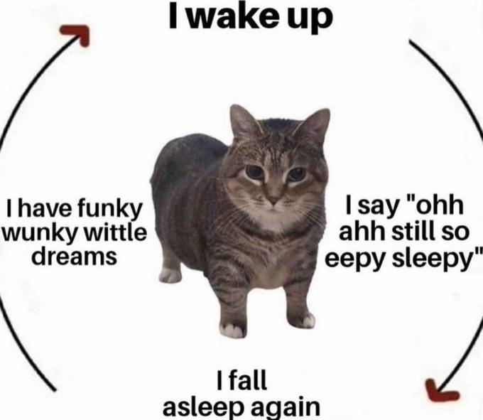
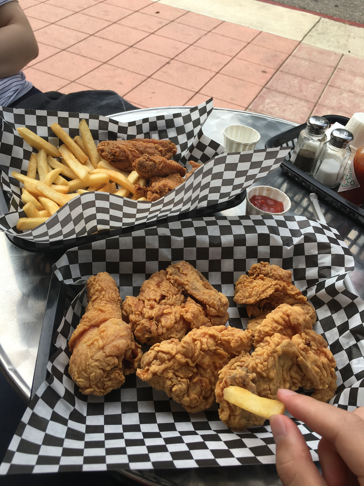

其实我们很早以前心就有点分开了是吧
绳子打结了，也许可以解开。绳子剪成两半，也许拼不成原来的，但是可以将就将就着用
守护过去这段感情的一直都是我们吧，你说后半段，你感觉不到我们在经营，对不起
写在卡片上的永远已经永远写在卡片上了
我明白了你的意思，我想说我会努力的，我欠你千千万万次，我会等在这里，也许我们回不到过去，也许我们也不会有新的开始，千疮百孔，让我来一点点补起来
团，我说了很多气话，我想告诉你你没爱错人，我不会让你失望的，我会努力的，我想保护你。
也许我们再也碰不到了，也许有天我会放下，我放不下的话，我也会好好的，我会一个人，也能很稳定。
我很想你，我想一直等你，希望你好，祝福你，我说诅咒你的时候，我有不好的想法，我是撕裂的，很难受，你知道的，我不会诅咒你
真正在一起的时候，我是不是又厌倦了我们的生活，我那时候说即喜欢又不喜欢你，可能你现在的决定，一定是有自己的考量，我想支持你，今天我妈和我说了这些事情，没朋友成妈宝男了，妈宝也没啥不好
我去买车那天，你和舅舅来的，我很难过哭了，你看到了，那个时候我们分开了。我难过的是我们开始要各自fund自己的理想了，和现在感觉差不多，而不再是为了我们一个家一起努力了
现在我可能没攒够钱，但是我想我也在有个家的路上努力着
我现在也不能做什么，可能那个男生很适合你吧，祝贺你走出来，你一定会幸福的，想象你穿着婚纱，开心的笑着的样子
我很充满矛盾内向，自傲，自负，自卑
我知道你变了，但是你从来没有背叛过之前的感情，你只是很痛苦很无助，现在的这份感情一定会适合你，我对你的祝福
我可能也从没打算背叛那份感情，却事实上，隔三差五的背叛，我对不起你
1993年9月，我爸妈认识在武林门边上的中医院，我妈刚分手，前任太聪明了控制不了（尽然还有这种事情）我爸情路坎坷，我妈说他把老实两个字写在脑门上，他们第一次在喷水池边上没碰见。
11月单位分房，他们登记结婚了，认识两个月，我妈考虑吧了半小时，同意了，94年5月，他们办了酒，6月21日你出生了，95年一月24日，我出生了，之后搬到分的金祝新村。
22年之后，两个最契合的人碰到了，感情在第一位，女生一直在包容，然后起起伏伏，7-8年之后，男生可能厌倦了，选择结束了这段最好的关系。他现在很后悔，但是也很期待后面的故事
刚才和你说话的时候不理解，觉得很陌生，现在想清楚了一些事情
you are my first lover
哈哈今天和团子说上话了
团子变了很多，我很讨厌她，甚至都不用脑补任何讨厌团子的理由去放下，这个团子完全就不是团子
当然她变得那么讨厌是我的选择导致的，这点我还是很难过，因为我有点知道现在这个团子不太好，说了些不太好听的话，我没法祝福这个团子，我也不是来祝福这个团子的。我总是那么幼稚，我不知道，我好想以前的团
我在等另一个团子，也许等不到了，不过我想我会等在原地一段时间
听说以前那个团子，在我送Michelle花那天哭了一晚上，我想告诉她，对不起，我想把全世界最好看的花都给她补上，不过应该没机会了，其实我从来没放弃过我们，虽然你可能感受不到
but i will try，即便团子变了很多，今天好像也收到方向，那就是先要自己过好，然后才能是感情，感情不是依赖，我有点迷糊现在，不过把自己过好总是没错的
但是没有以前那个团子我又怎么好呢，非常迷惑
说了很多很多气话，当然团子对他男朋友是百分之百付出的，我希望他们好，我希望团好
很难想象团身边那个人不是我，情况就是我要接受这个情况
很多话没法说出来，不过一些瞎说的话，也没啥意义，脚踏实地一点吧亲
今天和团子聊完，好像瞬间没有了写下去我和团子故事的动力，我们总没法一直活在过去吧，虽然我很想一直活在过去，我把团子给我的东西收了起来，但我不会把他们丢掉
我感觉我走不出来了，哈哈
后面两年时间，我们不太坐飞机了，飞机贵，预定起来不方便，我们基本两周就见一次，我们坐着灰狗，不断穿梭在5号公路上，停在Fresno，我现在没法看灰狗，那时候花一个晚上，为了见一个双休日的两个人，现在尽然是最熟悉的陌生人，我不知道
我们做了世界上最喜欢的两个人才会做的事情，然后来到了一个很坏的结局。我肯定走不出来了
在群里，我不断等着团子的回应，想立刻马上，不是今晚不是明天，给她打一个电话。我想听到她的声音。不安不断袭来，没必要欺骗自己，我最想要的那个答案，如果有的话，不用等一分一秒
我想她告诉我，她相信永恒的爱，她还爱我
我想告诉她，我想她嫁给我，不论以后贫穷富贵，曲折顺利，健康与否，我都愿意照顾她。照顾我们的孩子，我们的父母，亲人，朋友。我愿意用双手撑起我们这个家，从此心无旁骛
多么残酷，可笑的statement，一个有前科的男人，一个没有担当的男人，一个情绪不稳定的人，一个算不算得上人的人，想的说的却是这样的话
今天很可能是最后一个晚上了，我眼睛很困，尝试了睡眠但是怎么也睡不着，我知道假如今晚不把这些故事记录下来，明天可能就没有这些故事了。我得坚持着把他们写完
谢谢团子给我准备的那么多纪念，整理好了尤其是有一本七夕节的相册，帮我写下现在的文字提供了很大的便利。我想我曾短暂拥有过他们，拥有过他们，之后呢
源于2014年的圣诞假期，codepilot能别捣乱吗。
和舅舅，wjc和团子去青藤茶馆玩，父母刚好有四张券？或许我记混了，不过这个茶楼的券一直都有
那个时候玩的东西还很匮乏，无非就是唠唠嗑，打了牌，大概是双扣，或者是吹牛。我们似乎还尝试寻找麻将，最后没打成
这么说来，我们第一次一起吃饭的地方其实是那个茶楼
喝完茶，我们自然是去西湖边荡荡儿。我们在一艘手摇船上，其实我不太坐过手摇船，但是很舒服。拍下了我的第一张照片。
团子穿什么我可能已经忘了，大概那个时候她还带着白色全框的那副眼镜，我其实很喜欢那副眼镜，感觉萌萌哒
我穿着一件紫色渐变色的假nike外套，高中时候，我妈从萝卜阿姨的市场那里买的，还有一条卡其色的裤子
拍下了我的照片的人，我不确定是谁，但是他们都把这个照片换成他们的头像。那时候wjc还在学希伯来语。就在那一天， 我对团子有了好感，我的逻辑很简单，把一个男生当成头像，第一天，多少有点意思吧
那时候可能我还短发也不秃
圣诞假期总是很快，不多久我们就回去了，那次似乎我还晚去了几天，我记得第一天到学校，我就去打印的自习室，破天荒的补了课，现在想想，难以置信
我以为我大学都在玩英雄联盟，但是那个时候刚转入ee没多久，所以还是很上心学习
我和团子就这么聊着，在微信上，那时候还是iphoen5s，很久之后我们在一起了，团子提过几次吧聊天记录导出来
用现在的话来说，就是我们体会到了聊天的乐趣，天南海北的聊，从早到晚的聊，期待着她的消息。和一个喜欢的人聊天，和第一次互相喜欢的人聊天
我把我所有的自定义表情包和有点暧昧的话都用上了，那时候其实也没啥表情，可能也没啥暧昧的话，无非是我想你，现在长大了，嘴巴可厉害了，总之好想看看那时候的聊天记录啊
我发现我很喜欢团子，我一直等着，想到某一天和她表白，那时候我们已经约好了三月份去一号公路玩，我从来没有那么期待过一次trip，我知道我要在那个时候和她表白
我想只有那个时候的我，还有团子能让我平静下来
2015年三月20号，我飞去了旧金山。那时候还没有uber，我做了那种小巴车去了Berkeley，路过了san francisco oakland bay bridge，这座亮灯的桥，那么宏伟，我不知道他是不是金门大桥，我也不知道之后我会和这座城市有这么多的故事
第一天晚上，团子下来接我，第二次见面，总是有点小尴尬。那时候你还住在2020kittredge。上去之后，看到了那条狗，nini，nini不好好上厕所，cyb在骂她
接下来一番自我介绍，还和cyb玩了一局游戏，你可能在旁边看着，想到第二天很早就要出发了，我睡在了客厅的床垫上。我忘了你室友的名字，cyb也有一个abc室友。现在想想，上大学的时候，住到别人家客厅里还蛮好的，我应该这辈子没机会像这样住到别人客厅里了
nini后来很久都是我最喜欢的狗，只是我对她的记忆很模糊了，她喜欢露肚子，她不是很聪明，认不得主人，不太会上厕所。我只记得有一次在marina，她跑远了，我担心她走丢了，但是结果她跑了回来。我一直记得她愉快的跳跃的样子，我想她也不笨嘛
21日第二天一早去了楼下法国店吃早餐，出发前的早餐，我很喜欢那个店，不知道是不是帕尼尼还是法式三明治，那个时候我就不喝咖啡
一号公路吗，就是那些桥，海，草地的风景，后来我去了很多次，第一次去时候那种陌生，原始还是挺不错的
第一天我们赶路，可能去了卡梅尔小镇，在镇上吃了午餐，我很喜欢那个地方，一直，就很精致，晚上我们住在一户airbnb，女主人是个华人，门口有个篮球场，那时候airbnb还有早饭bnb嘛，晚上我们吃了jack in the box第一次吃，我觉得那个小丑很奇怪。其实这一段我可能有点记混了，时间太久远了哈哈
那天晚上我可能和子昂一个房间，其实一天赶路已经很困了，但是我还是玩了游戏，当别人回到房间的时候，我们在那张长桌上，铺着红色桌布，女主人装饰觉大部分是她的儿子，想必儿子是她的骄傲
你看我打了游戏，我们还聊了天，其实我忘了我们聊什么了，我一直在等一个氛围，告诉你我喜欢你，虽然那时候感觉很好，但我觉得氛围还没到。困了我就回去睡了，子昂睡着了，我想着想着你也睡着了
第二天吃完早餐我们去蒙特雷，其实是很短徒的一次trip，那时候觉得好远。中午我们可能吃的是那个虾店，bubba gump,哈哈也是我从此很喜欢的一个店，很久没吃了
然后我不记得是饭前还是饭后，我们去了水族馆。时间可能不充裕，我们这个组合有肖哥，总是安排的很好。我早已没有心情看那些水族馆里的东西，那忧郁的蓝光，我满脑子里都是我该怎么和你表白
我找到了一个半厅在二楼可能，我拉你上来，先是找到你，这种approach的感觉，很神秘
那应该是个很烂的表白，我说，“我们要不要试试在一起”，你答应了，那一瞬间，我大脑一片空白，我第一次恋爱了
直到之后我都很痛恨这次表白，我觉得它很烂，我从来没打算和你试一试，我也不想试一试，感情没得试，我那时候，全身心的认准了你了
实际上那天回程，我们都很害羞，你做在我后排，我尽量装的没事情发生，不看你，但是我的余光，每分每秒都在你身上，以至于有别人我觉得不自在
回来路上我们去了Milpitas吃饭，我把香菜放在你的奶茶了，因为你不喜欢香菜，肖哥很生气，但是我知道那是属于我们的秘密，你那个时候永远不会对我生气
对了那个时候还有一个cs的学长，那是我第一次知道cs这个专业，我觉得ee也不错那时候
那天晚上我又睡到了客厅里面，之后你要去阿拉斯加，绿色的裤子，碎花羽绒服，我记得我已经离不开你了，但是还是看着你睡到自己的房间
第二天一早，我们又去那个楼下的早餐店，我们没有多少时间你就要去阿拉斯加了，你挽着我，我第一次好幸福。我们逛了一圈，如果可以回到那一刻，我想你挽着我一圈又一圈
你走了之后，我定了一个旧金山的trip，想着都来了，大巴带着我去很多地方，走走停停，我看不进风景，我想的都是你。我很喜欢旧金山这座城市，因为我在那里遇见了你
有很多东西可能都不准确了，但我尽量还原了
2015年4月13，这是写在拍立得上的日子，在emervile的一家家具店里，知道你很喜欢手工美术，但是第一次走近这些店里，还是被你看那些东西的眼神吸引了，我想着如何布置我们的家，假如有一个房子的话
分开总是煎熬的，尤其是刚确定关系的时候，分开了20天，完全就感觉好久好久
我不确定我们第一天呆在哪里了，好像待在你家里客厅的床垫上，那时候酒店对我们来说还是很贵滴，这次很上次不一样，你偷跑出来，哦对了你室友叫王洁琼，你躺着我旁边我们改了一条被子，就这样窝在客厅那个床垫上
那天我们第一次睡在一起，时间好像停了
说起来这次，我是坐飞机来的，飞机很贵，需要提前plan所以坐的次数其实不是很多吧，具体的我都忘了，如果是坐飞机的话，我可能要做公车到lax然后飞到sfo然后地铁，哈哈真的很多交通工具呢
你来地铁站接我，我看到你在柱子边上等我，也许你带了一顶帽子，我们接吻了，肆无忌惮的，我想不到用什么电影去形容，不记得吻了多久，那天我们睡在床垫上，就像上面说的，nini呢
第二天大概就是4月13号，我们住到了garden inn，感觉自己是个大人了。那天我们睡在了一起，不再是客厅的床垫上。也许就是那一天，那是我第一次，酒店的早餐还是不错的
从那一天开始一切都变得熟悉了起来
你在本子上写道：在东海晚上，你对着bay说，“朱天骐，我爱你”，我想两个异国他乡，孤独人，竟然就这样连结在了一起
那次我们好像还找了一天去pier39，在japantown逛街，我有点记不起来了，在pier上我们有一张合照，在雕像前，你很喜欢，一直放在桌上，现在这张照拍就在我手边，那时候我们真的好青涩啊
说到pier39，就不得不提那些海豹海狮海狗什么的了，躺在那边，我们看的好痴迷，从此之后我都很喜欢他们，直到有次看到有个巨型的，有点怕
15年4月26，你第一次来LA，我们住在机场边上一个小airbnb里面，la的街道总是很类似那时候对我
已经不记得去过多少次la的地方了，我们最喜欢的几个地方，century city， westwood，santa monica，grindel，但我们好像总是完美避开了景点，以至于我现在还没去过格里菲斯，lalaland
那天和酒店不一样的地方，我第一次体会到了我们的家的感觉，我第一次给你送礼物，是一个圈口太小的戒指，关于礼物我觉得我对你一直挺亏欠的，如果我们还能相遇的话，我想给你补上。其实我是个很有仪式感的人，嗯，我想给你补上
但是那也是我第一次体会到不安，感情太猛烈了，我已经做不好其他任何事情了，包括学习，哈哈哈，现在也是，我总是把感情放在所有事情的第一位的这么不靠谱的一个人
我不知道我有没有像你表达隐忧，一开始我总说的是，我好希望时间停在这一刻。我怕，失去我们最美好的时刻，我不喜欢一切外界的事情，我一直在确认我是不是找到那个永远对的人
我们睡在一起的时候，你会哭，我不懂你为什么会哭，我问你，你给了我一个回答，我有点还是不懂
我们做了果冻，虽然很不成功，也许成功了，我小时候的果冻，从来都是糖水
五月4号，你又来la了，上次很短暂，这次我们定了个私人的airbnb，在brian家，我定了十多天，我第一次意识到有个住的地方多重要，以至于我在宿舍的时候有时候就在看外面房子多少钱了哈哈哈
那个时候还是飞机比较多，其实开销很大，我们都是学生，我每次都很苦恼
我那个时候已经完全放弃那时候的功课了，你还是鼓励我，虽然我基本就不写了，主要就是玩玩游戏，陪你，你写道“每天过的都像倒计时”
那次基本早就了我那个学期0.25gpa的惨剧哈哈，虽然后来重修了，其实我还是蛮骄傲的，我f过，我f是因为感情太强烈了
我想我可能问了你不止一次，时间能不能停在这一课，我能够逃避所有，只有你和我
我想也是从那个时候，我一直问你，你会不会永远喜欢我，我们一开始睡着前都会说，渐渐的不说了
你写道“说不完的悄悄话，闹不完的小脾气”，显然我是个话痨，我们一直会聊到累了睡着，渐渐的后来，我们好像不说话了，甚至生活到了不同的时区。其实现在，我有对你说不完的话
小脾气的话，我已经忘了，可能就是我学业不行了，还整天问你些有的没的问题，其实我挺疑惑的，我一直以为，感情是一帆风顺的，就像到躺在床垫上之前，我们就压根没有任何问题
那次我们去了几次学校，我们画了梵高的星空，显然那画没卖出去，那画现在在哪里啊。我们取了第一个绰号叫田鼠，描述我们每天窝在床上哈哈
你给我写了一张贺卡，很多张上的一张，你说
“也许我的笑不能像原来那样打动你了，也许奇怪的事情，分别的情景越来越多了，但请你永远记得，我爱你，以前现在，将来，我都会一心一意的（地）保护你爱你”
你是真的的得地不分啊，那时候我是如此的奢求将来，假如那个时候的我知道我怎么毁掉了这份感情一定会疯了的，那个时候的以前，现在就足够了，假如要加上将来，如此沉重的词语，我不知道，我想的将来现在只有你
后来有一张上说“我后悔没有在你说我们逃走的时候拉着你一起逃走”，其实我是真的想逃走，我不知道，我只想在感情最强烈的时候，和团子逃走，只有我们两个人的地方
因为是倒计时嘛，总是到了最后一天，我们晚上去了学校，在royce hall拍了一张照片，去之前其实我情绪很不好，因为不舍得你走，但是晚上走在校园里的时候，感觉有风，吹散了我们的忧虑，在roycehall门口我们好自然啊，我想我现在也等一阵风
我想先睡一会，明天你要给我打电话，我想充满精神，至少给你留个好印象
眯了一会，醒了，其实一直睡不好
我不知道和你说什么，看到“在我这边不会改变什么”这几个字，我不知道该怎么回应，反驳自己或者你
昨天晚上，我去找了sam和豪哥，他们和我说我不太能成功的我想也是这样的，倒不是说我有多有信心，这个事情已经走了很远了，我一直想提出来
我不知道怎么去打动你，或者打动我自己
我感觉我像一条落水的狗，刚才还想去河里洗个澡，现在只想回到岸上，也是没有棍子我就危险了
5月25日 你和penny 桃子又来了LA，我们去了disneyland，那次我有点晕那个摩天轮，你好像很在意为什么那个人吧我们叫成zoo，因为我们把椰子壳落在了地上
你写道“喜欢我们去坐自由落体，然后在最上面的地方吧我抱得紧紧的”，原来你那个时候还能克服恐高啊
6月8号，你又来了LA，其实总是你来，我很难受，我也想多去看看你，我那时候就觉得感平等很重要，但是考虑到各方面的因素，我没向你提
在michelle家，你很喜欢那边的大狗子，柠檬树，和深夜羽毛球
我们去看了一次电影，看的什么我忘了，好像是动画片有点吉普里风格那种，讲了舞会什么的。看完我饿了，我们去吃一个familly restaurant，我不知道点什么，边上的中年美国人帮我推荐了一个，我们就点了那份。我想他看到我们腻歪的样子，应该想到了什么，最后结账的时候，服务生告诉我们，边上这位先生已经把钱给付了。我们都觉得很神奇
走之前下午，我们抓松鼠玩，你很喜欢松鼠，但是我不好，用筒子抓住了一个松鼠，咬到了你，把你送去了急症，等了很久，医生给你打了一针，我不知道是不是安慰剂，因为后来我被猫挠的时候打了两次，你错过了飞机
我们定了一个很烂的airbnb，就一个房间，隔壁住着一些人，还抽着大嘛，我们房间没有锁，我那时候也在final，因为没学习十分焦虑。你一早的飞机，我舍不得你走，就这样累着累着抱着，睡着了，醒来的时候你亲我，然后走了，我又睡了一会
后来我念到你那天的名姓片，我不记得了那个时候我骗你说要分手，但我记得挺焦虑的，你理东西的时候我醒来了，到处找你，你说你心疼我
我想那个时候我就很讨厌，感情好像在慢慢变淡这个事情，毕竟学业的压力，在一起的花销，但是还是被我们的很强烈的感情冲淡了
6月21日，你第一次生日，我们有一个小派对，你把我介绍给你的朋友们，只有一张床，我们躺在地毯上睡着了
我现在很难过，因为记不得那次送你啥了
2016年8月9号，我们在amc century city看了 jason bourne，完全不记得有这么一部电影了
那个，假如你碰到了更好的人，我祝贺你们，祝你们未来一切顺利～
很多时候脑子里闪过无数过去的画面，地上铺开我们以前的东西，我嘲笑自己像秦始皇一样，要带着这些东西“死去”，躺在床上
几个礼拜以前，michlle问我，团子还喜欢你吗，我苦笑道，应该喜欢又不喜欢吧
我当时这么回答，一方面是很自恋，想给自己撑面子，团子还喜欢我，另一方面也是事实，团子应该已经不喜欢我了，因为我在一条没有团子的路上狂奔，沉溺于其中
这个场景不断的出现在我的脑海中，我想团子怎么想显然我不知道，根据自己的理论，喜欢是相互的，显然，我想表述的是其实我还喜欢不喜欢团子
说实话，之前几个月，我一直没搞清楚这个所谓的喜欢不喜欢，之后很长时间我也应该不明白，思绪像在漂浮，抓不住，但我还是有时候努力的在想，即便是很痛苦
以前我觉得喜欢，可能已经是一种习惯了，团子对我很好，我很依赖她，团子总的是很好的人，或者说团子是我见过最好的人，或者说团子是我最好的自己
我们经历了很多，成长了很多，我是那么的不成熟，做错了那么多事情，但是我们直到最后一刻也没有放弃
我和团子在一起的时候，和自己在一起的时候，竟然又变得不是自己，和自己磨合，总是在里面瞎转悠，外面看，磨啥呢
我应该忘不掉，但是我想忘掉，那么多的事情，得到时候的快乐，和吹散时候的痛苦，只能不去想
我的记性，也没有很好了，但是我们一起成长，努力的样子，互相照顾的样子，我不知道该用什么感情去想
痛苦，或者不喜欢，源自于我内心的不满足
这是很矛盾的地方，我是如此的讨厌交换，确沉溺在其中，我讨厌自己，讨厌这个规则
“无条件，我只想等你的信号，骗子”
也许假如我们不在这个社会上，我们应该还是最天真烂漫的一对
显然这种取索无厌，从自己身上，从团子身上，把我撕裂了
我急于证明自己，急于填补自己，我把我见到自己补全了最想见到的样子，我虚张声势，好像不曾残缺
当我看到自己支离破碎的时候，当我湮灭的时候，我想到了我还不够格,从来就没资格放弃，或者破坏
请一定要慢慢找到力量，从过去，从未来，把自己拼凑起来
告诉自己，因为我们已经合二为一过了，和电车不一样，交织分离，合二为一永远都会是一了
当我意识到，我可以真正承诺，而不是束缚，我可以被爱，而不是交换的时候，我可以脱离的时候，可能已经错过了，他想让我们遗憾，他想让我害怕，他想让我疯狂，我一定会找到自己
所以我会祝福我们，不管在哪一条世界线上，我不会羡慕，我想要学会爱
可是，好希望我还停留在那个给你带去快乐的猪猪侠上面
好希望时间停留在我们最喜欢彼此的那一刻上面
好希望我们能穿越时空，永恒
也许我们正在穿越的就是时空，也许我们也已经经历过了永恒
brand new day
visa也太难刷了,今天又被ban了

Capybara,Capybara,Ca~py~~bara~~
买了netflix车位，看光妹的初恋，看过吗？
支棱起来！明天打算去办公室了，希望上班能多点进展，当然也希望我的水痘别传染给别人了
anyways各种东西都被拉黑了，显然有的人喜欢pullmodel而不是pushmodel
刷签证的软件好像还不太行，今天吃完晚饭可以努力一下
脑子的话，能不能不要乱想了，我想一直祝福自己
想吃麦麦，尤其是加拿大的麦麦，看看自己能不能活下去
所谓的承诺，用现在去预测未来，怎么看都不像是完全透明的事情
一下子很难受，感觉呼吸不上来，现在好一点了，可能这就是人生
很久没听歌了，你也很久没听了，想让音乐充满自己
梦见某个人加我回来了
久违的梦见了高中作业，大学考试，惊醒。也梦到了小学最喜欢的老师，她好像不太认识我了。害怕没法满足别人的期待
安大略西梅很甜，做菜切到了自己
额头上有个陨石坑
痘坑搞的很抑郁，买了祛疤的希望能有用
dc还是很开心的,今天也第一次出门了
不是很开心，不过要振作
想有一间tahoe的林间小屋，想学音乐，会一种乐器
round one, the last round
水痘的话，可能好一点了，热度退了，但是今天多了个新症状，头有点晕。还是要非常谨慎，不管是之后休息什么的，一个人都还是要小心点
希望能快点好起来，不想让人担心。今天洗了澡，我感觉我做不成三天才洗澡的狠人。。
在土狼屯夏天结尾，吃上夏天第一口西瓜，然后狠狠的喷射了，总是充满戏剧性。应该多喝几天粥水的
一直不太开心，在一个夏天这么短暂的地方，但是这两天这温度，让我休息的稍微好一些了，可能我心情也变了些
继续看重启人生
“你要是没有一辈子支持他的觉悟，就不要随便鼓励他哦” 所以自己可以一直鼓励自己嘛
我最喜欢的树是哪一棵？爷爷奶奶家楼下小公园里的那棵樟树，周围围了一圈到膝盖的水泥凳子。那时候我在树下过家家，奶奶在边上看着
树还不大，栽下去没多久，只有碗口粗。我也不大。 现在这颗树好大了，我也大了一圈。半山爷爷奶奶家，可能是我最无忧无虑的日子，除了我妈打电话逼我写作业
有时候不知道为什么，人的价值观会被社会，或者所经历的事情所扭曲，我完全不是这样子的人，但是看到亲近的人这样，很痛苦
在最底层的信仰上面，我非常自信
说到信仰，最近有点喜欢上了佛教或者别的信仰
今天这个时候，十年前，我离开了中国，明天这个时候，十年前，我已经到美国了
09/05/23 7 32pm
从三号开始已经是第三天了
虽然我暂时不知道是不是水痘，毕竟看上医生的时候我已经好了或者死了，这就是加拿大～
开玩笑的啦，如果真的不行了的话我会去emergency的
情况就是现在全身都在长水泡，疱疹，确实很吓人，尤其是头发里很痒，怕掉头发。。脸上很难看怕留疤，还有点热度反复，刚刚测了一下，还有38.3度
其实不太确定，确定话就是我的水泡是四肢少中间多，不确定的地方是嘴巴里面并没有，似乎疹子都长在有汗腺的地方
看了一下网上说比较建议吃泰诺，所以我明天也许可以再去买点。麻烦的是晚上会出汗，痒睡不着，休息不好然后就好的比较慢？
今天去了药店，买了瓶涂涂的东西，把自己涂成了印第安人，wowowowowo
应该会吃药，好好休息，平静下来，不要乱挠自己
虽然有时候很难受，会乱想，不过不用担心，我觉得我应该会好起来。
也许人没经历过很多东西也谈不上什么成长，以前可能都有团子照顾，所以很安心，现在有点害怕，不过我想团子应该也在想让我好起来
想要谢谢团，不管看到没看到，都给了我很大的勇气。也要谢谢自己，谢谢所有人，我想做一个更完善的人
最近真的发生了很多事情，总是尝试着自己消化，今天也因为乱想，疯狂尝试联系团。也许等我好一点了。
感觉到了本我的抗议，physically我要用自我压抑住他，精神上我要用超我克制住本我和自我
更加不确定是不是新冠了
全身都在发水疱疹，尤其是头发里，晚上好痒。不是很好，不过希望能快点好起来
我感觉我生水痘了。。。
跑了两个药店都没有test kit，发烧38.5度，感觉稍微好一点，感谢阿司匹林和泰诺。唯一不舒服的就是发烧出汗起疹子，尤其是身上和头发里，很难受。
好像不是全身疼，我好像新冠了，明天有机会测一下。没发烧，眼睛后面肌肉痛，肌肉痛，睡觉一会冷一会热，睡不着
老了可能就是一会这儿疼一会那儿疼，我现在胃疼，手疼，肘疼，腓肠肌疼，有点膝盖疼和脚疼
今天去买了条裤子，明天要去跑步，加拿大真的所有东西都比美国贵，我是没想到的
喝了杯芒果smoothie，直接胃抽搐，怀念以前怎么吃都没问题的年纪
一开始没啥感觉，还去边上吃了牛小排donburi，和盐酥鸡一样的karaage，一边吃着吃着胃就疼了，虽然但是，还是感受到了所谓”开心的事情才奖励自己吃一次“那种快乐
只希望今天能休息好？
celpip其实还可以，比较喜欢口语的practice题目，who is your best friend
应该说自己的
没睡够，很累，回家躺着了
就是那种，再不休息就会感冒的感觉
听起来这个人可能很辛苦，实际上一个基本每天都躺着的人，可能是心累
不过最近的歌都挺好听的
另外今天发现车的title寄丢了，不愧是加拿大，我给他钱让他帮我把东西弄丢，还给我们发scam
一开始挺生气的，但是想到三年半前，ead卡寄不到，寄到elcerrito，也是很急
一下子就平静了下来，那时候真好，那个地方真好，那里的人真好，也许这就是成长
然后我就吃点了晚饭，elcerrito的什么东西好像都很好吃
今天是超级蓝月，月亮总是藏在城市的高楼后面
因为住的地方附近都是些有点年纪的公寓，人多少有点可怕，不能说是很坏很坏吧的gangster吧，但总有些害怕
人为什么会分三六九等呢，就像黑哥哥为什么总在我家楼下开impart一样困惑
可能有的人没法接受自己的不幸，总是把不幸归因于别人？别人可能本来也没做啥事。人的这种不完美到底是一种天然的缺陷还是有什么特殊的意义
做了一些梦，看到了潜意识里的自己
孤单，谨慎，懦弱，伪装，恐惧，霸凌，欲望，犯罪
我想现实中法律确实是在保护别人
晚上饶有兴致去喝coco，奶茶三兄弟，以前在aupc最喜欢的奶茶好吧，标配手抓饼，with舅舅和潜凌宇
一开始只喝到珍珠，我以为那个人快打烊了骗我只给我珍珠，“tm的，当我没喝过奶茶是吧”
昨天晚上下了雨，本来应该好好睡一觉的，结果做了一晚上怪梦。晚安什么的，也许也不简单吧
导演的sense...
人有时候就是挺扑朔迷离的，你说你手臂跑步都练的，怎么去趟超市拎个袋子走两步就气喘吁吁了呢
登陆了一个以前的邮箱，密码早就泄露了，粗粗一看发现最近有个人把我英雄联盟账号给偷了，还是写了ticket告诉riot这个账号对我多重要
其实当然不重要，精美的皮肤，游戏的快感，已经都留在过去了。他只是不断提醒我，赤身裸体的来，注定化成一缕尘埃。define我们的不是
从哪里来，拥有过什么，最后到达了什么高度。我想是我们的笑容和眼睛里的光彩，期望自己能给自己和身边的事情能量。
还有离谱的话，前几天公司发现给我多发了一天的钱，400块，让我给退了。我很无奈，放进口袋然后拿出来总归不太能接受。关键是他说退几天几天，我也没办法，都是他说了算的，也没啥必要去验证一下。
股票大手大脚，生活捉襟见肘，口号金钱至上，但绝不出卖灵魂 的理财大师狸克。
偿还过，才如愿
七夕节，浅浅上一下班，给自己放一天假，不洗澡，虽然我每天都放假
本日最佳，我感觉我像一条藏不住东西的小狗？
本日最烂，popeyes齁咸，感觉店员搞错配方了，但是草莓派还是一如既往的好吃
觉得自己变坚强了？睡觉可以难过醒，但是醒来了又不难过了
あたらよ 可惜夜，是天明会感觉惋惜的美丽夜晚
“また夏を追う” by あたらよ
君から見た僕はずっと 遠くを歩いていたんだね だからもう変われない君を取り残して
在你眼中的我 是早已离你而去了啊 所以唯剩你迄今不变
いつしか僕だけ変わっていたんだ ほら気づけばもう また夏を追う
不知何时起唯有我逐渐改变 待发觉之时已然 再次追逐夏天
それでも触れたくて 心の奥へ歩み寄る
seeds
"have a nice day" "you too"
沙滩猛男：微笑比较能长肌肉
梦见了奶奶。
奶奶一如既往的和善，乐观，充满一种不属于她这个年纪的好奇。
她饶有兴致的看我工作。
最后我们抱在了一起，我怕他走，“下次”，安慰自己她会长命百岁。
最后一次，还是倒数第几次，还是0次？
和现实中不一样，我沉浸其中。
假如她和外婆都离开了，我会变成什么样呢？
我想我会带着他们，用眼睛去感受这个世界。
如果后悔有用，我会后悔反思自己的行事方式。所谓考虑别人的感受，其实只是过于自我的借口。放下自己，融入多边的结构，是一种很重要的品质，请以这一条作为你行事的准则
阿尔吉侬就坐在洗手槽上望着镜中自己的影像
很多年以后，我成为了一个上班的人，但是在上班的时候却体会不到写程序的快乐。我想要重拾那份初心，dream，chase and neverstop
I build this website! I learned baisc html yeasterday.
I firstly published this website on github, using git is really hard for me at this moment however building website is fun.
Now it works, could be the problem of what? Seems like it doenst make changes immediately. I think it's browser's problem. I refreshed my browser it appears.
I am trying to use git to change my website,however, the name of folder is different,whatever. I think I kind of get it.
Took my cs32 final this morning and that's another long story. I had BBQ chicken for lunch after test and here is the photo.

This problem is really interesting about the time complexity. I write two solutions one is recursion and one is backtracking. The intuitive idea of backtracking generated from 1.time consideration 2.pass by reference is quicker than pass by value. Here is the code.
Backtracking:
void help(TreeNode* root,const int& sum,vector>& result,vector& path)
{
if(!root)
return;
path.push_back(root->val);
if(root->left==NULL&&root->right==NULL&&root->val==sum)
{
result.push_back(path);
}
help(root->left, sum-root->val, result, path);
help(root->right, sum-root->val, result, path);
path.pop_back();
}
> pathSum(TreeNode* root, int sum)
{
> result;
path;
help(root, sum, result, path);
return result;
}
Pass by value:
void help(TreeNode* root,int sum,int count,vector>& result,vector path)
{
if(!root)
return;
count+=root->val;
path.push_back(root->val);
if(root->left==NULL&&root->right==NULL&&count==sum)
{
result.push_back(path);
return;
}
help(root->left, sum, count, result, path);
help(root->right, sum, count, result, path);
}
> pathSum(TreeNode* root, int sum)
{
> result;
path;
help(root, sum, 0, result, path);
return result;
}